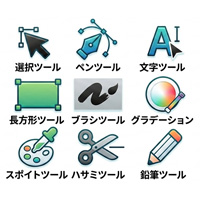

ツールの意味 → 作れるもの → 実践

- プロンプト例
Illustrator完全未経験者が,どんな練習の手順を踏めば理解できるようになるか？
Illustrator（Adobe Illustrator）は「ツールの意味 → 作れるもの → 実践」の順で覚えると理解しやすいです。
完全未経験者の場合は、次の 5ステップで練習すると効率が良いです。
Illustrator初心者の練習手順（ロードマップ）
① Illustratorの基本を理解する
最初は「仕組み」を理解します。
覚えること
- ベクター画像とは何か
- アートボード
- レイヤー
- 塗り（Fill）と線（Stroke）
- 選択ツール
練習
- 四角形
- 円
- 三角形
を描いてみる。
例
- 四角＋円 → 信号機
- 四角＋三角 → 家
👉 目的：Illustratorは図形を組み合わせて作ると理解する
② 基本ツールを覚える
Illustratorはツールを覚えると一気にできることが増えます。
優先して覚えるツール
- 選択ツール
- ダイレクト選択ツール
- ペンツール
- シェイプツール
- 文字ツール
- パスファインダー
練習
- 作ってみるもの
- スマホアイコン
- フォルダアイコン
- 星
- 吹き出し
👉 目的：ツール操作に慣れる
③ トレース練習（超重要）
初心者が一番上達する練習です。
手順
- ロゴやアイコン画像を配置
- 上からなぞる
- ペンツールで再現
練習素材
- シンプルなロゴ
- アイコン
- 絵文字
例
- 作るもの
- カメラアイコン
- ハート
- 雲
- コーヒーカップ
👉 目的：パスとアンカーポイントを理解
④ アイコン制作
次は自分でデザインします。
作るもの
- カフェアイコン
- SNSアイコン
- 食べ物アイコン
- UIアイコン
例
- コーヒー
- ノート
- ペン
- カメラ
👉 目的：デザイン思考を身につける
⑤ 模写（実務レベルの練習）
最後は実際のデザインを再現します。
模写するもの
- LPのイラスト
- バナー
- ロゴ
- アイコンセット
おすすめ
- カフェLP
- コーポレートサイト
- アプリUI
👉 目的：実務レベルのデザイン理解
Illustrator初心者おすすめ練習順（超重要）
① 図形だけで作る
↓
② アイコン
↓
③ ロゴトレース
↓
④ バナー
↓
⑤ LP素材
この順番が一番挫折しにくいです。
初心者がやりがちな失敗
❌ 最初からロゴ作る
❌ ペンツールだけ練習
❌ 複雑なイラスト
正解は
「図形 → トレース」
1週間練習メニュー（おすすめ）
Day1
- 基本操作
- 図形で家を作る
Day2
- 図形ツール練習
- アイコン3個
Day3
- ペンツール
- ハート・雲
Day4
- ロゴトレース
Day5
- アイコン制作
Day6
- バナー模写
Day7
- ミニLP素材制作
Webデザインを目指す人の練習（重要）
あなたがもし Webデザイン目的 なら
優先順位は
- アイコン
- バナー
- LP素材
- ロゴ
です。